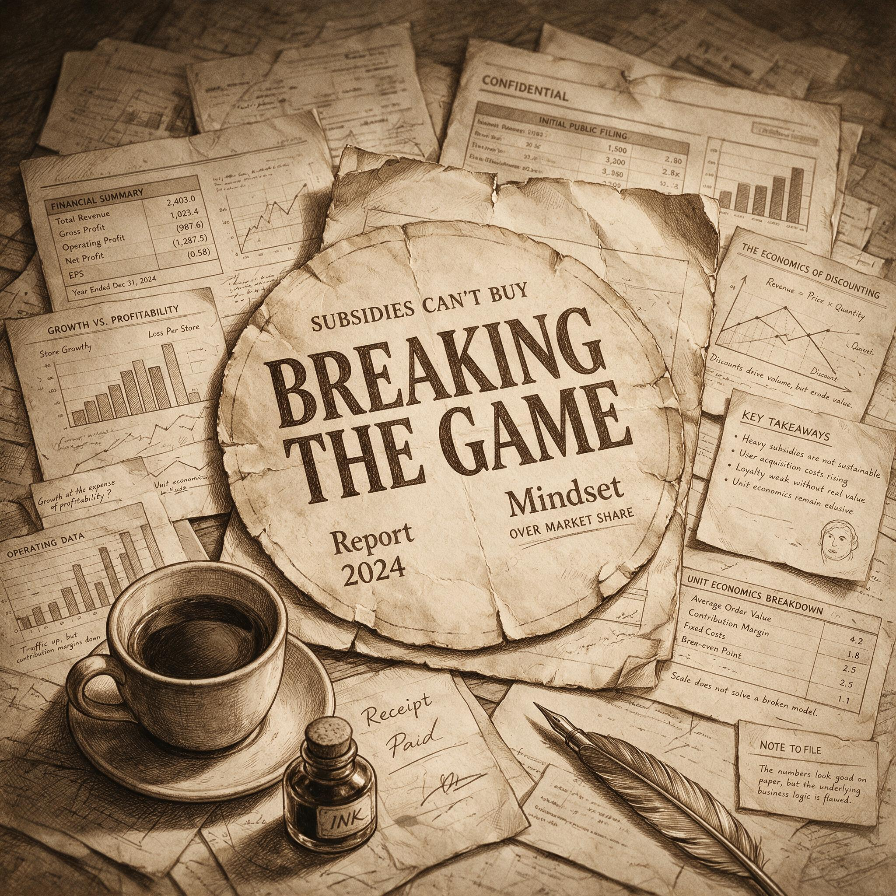

第 10 章
补贴买不到心智
配送时效确实收敛了，但收敛点的位置比所有人预想的都低。2020年1月31日，一份89页的PDF文件进入华尔街交易员的终端。文件名：Luckin Coffee: Fraud + Fundamentally Broken Business。署名方是浑水研究，但报告第一页注明文件来自匿名信源，浑水核实后公开发布。报告的核心武器是一个数字：11,260小时的门店流量视频。
调查方声称动员了92名全职和1,418名兼职调查员，在瑞幸620家门店持续拍摄，逐帧记录每笔交易的时间、品类和取餐人数。视频数据与瑞幸向SEC提交的季度财报比对后，结论是：2019年第三季度单店日销量至少夸大69%，第四季度夸大88%。当天瑞幸股价从36.40美元跌至27.20美元。
但这只是第一轮冲击。四个月后，2020年4月2日，瑞幸向SEC提交8-K文件，自曝首席运营官刘剑及下属在2019年第二至第四季度伪造交易约22亿元。精确数字后来修正为21.2亿元。股价从前一日26.20美元暴跌至6.40美元，跌幅75%。
六周后，纳斯达克发出退市通知。自曝文件中有一个时间节点被后来的大多数讨论忽略了：伪造交易始于2019年4月。这个月份恰好是瑞幸提交纳斯达克IPO申请的时间。

浑水做空瑞幸报告封面页
AI 生成插图，非史实影像。
也就是说，在公司向全球投资者讲述增长故事的那个月，内部已有人开始用虚假数据填补真实业绩与预期之间的缺口。这条时间线值得展开。2019年4月22日，瑞幸咖啡向美国证券交易委员会提交F-1招股书。此时距其首家门店开业仅十七个月。招股书披露的数据包括：2018年全年净营收8.4亿元人民币，净亏损16.2亿元；门店数2370家，累计交易客户1680万。招股书同时披露了一个关键指标：2018年第四季度首次消费后30天内复购率为54%。54%这个数字后来被反复引用。但它有一个结构性缺陷：它只统计“是否再次消费”，不区分再次消费的动机。一个用户因为收到1.8折券再次下单，和因为产品满意再次下单，在这个统计口径下没有区别。
更致命的是，瑞幸从未公布剔除补贴因素后的自然复购率——即用户在没有折扣券的情况下是否还会打开App。行业参照数据可以提供对比。星巴克中国2019财年90天活跃会员月均消费2.7次，会员贡献总销售额40%以上。
连咖啡在2018年峰值月复购率为38%，且这一数据是在未大规模补贴的情况下实现的。瑞幸的补贴力度远超两者，但用户黏性的核心指标始终不透明。复购率的结构性模糊不是信息披露的疏忽。它是一种必然——因为瑞幸的商业模式建立在一个有待验证的假设之上：补贴可以培养消费习惯，习惯形成后提价可以覆盖成本。这个假设在逻辑上成立。它在烟草、酒精等成瘾性消费品上有大量先例。
但咖啡是否具备同等强度的成瘾性？中国消费者对咖啡的价格敏感度是否会在习惯形成后显著降低？这些问题在2019年没有答案，因为瑞幸还没有走到“提价”这一步——它还在“培养习惯”的阶段。但浑水报告试图证明，习惯从未真正形成。报告第47页有一段判断：“瑞幸的商业模式从根本上存在缺陷。
其客户对价格高度敏感，品牌忠诚度几乎为零。一旦补贴减少，订单量将急剧下降。”支撑这个判断的数据来自25,843张电子收据——调查方声称从瑞幸App后台获取，覆盖2019年第四季度交易记录。分析显示，瑞幸将每笔订单商品数量夸大至少72%，将每件商品净售价夸大至少1.23元——方法是将免费赠饮按原价计入收入。报告中最具方法论意义的一段出现在第63页：“瑞幸的管理层并非一开始就打算造假。他们最初相信补贴可以培养消费习惯，习惯形成后提价可以覆盖成本。
但当他们发现习惯并未形成、提价导致订单量急剧下滑时，他们面临一个选择：承认模式失败并接受股价下跌，或者用虚假数据维持增长叙事直到习惯真正形成。他们选择了后者。”
这段话是对管理层心理状态的推测，无法被证实。但它提出了一个结构性问题：如果补贴确实无法形成习惯，那么瑞幸的模式从一开始就建立在错误假设之上。而如果这个错误假设被资本市场共同持有——投资人相信补贴可以培养习惯——那么瑞幸的造假就不是一家公司的道德失败，而是一个系统性认知偏差的必然产物。这个认知偏差可以精确表述为：将交易的重复发生等同于心智位置的建立。消费者因为补贴反复购买，不等于消费者在心智中为品牌预留了位置。
前者是经济学现象——价格弹性导致的需求变化。后者是心理学现象——品类认知与品牌联想的结构化沉淀。二者发生在不同维度，遵循不同规律，但它们在数据报表上呈现相似的表象：都在“复购率”指标上体现为一条上升曲线。区分二者的关键变量是“撤除补贴后的行为变化”。如果复购率在补贴撤除后断崖式下跌，说明此前的复购不是心智位置的反映，而是价格信号的反映。瑞幸从未公开做过这个测试——因为它不敢做。
但浑水报告用11,260小时的视频间接完成了这个测试：当调查员剔除折扣订单后，单店日均实际交易量只有财报公布数字的三分之一。这个数字意味着什么？它意味着瑞幸真实的用户基础——那些即使没有折扣也愿意为产品付费的人——只有账面数字的三分之一。其余三分之二是价格敏感型用户，他们的忠诚度指向折扣券而非品牌。
这与定位理论的一个核心原则构成直接冲突。艾·里斯和杰克·特劳特在1981年出版的《定位》中写道：“心智中的位置是长期积累的结果。促销可以制造短期销量波动，但无法在心智中占据一个位置。相反，频繁的促销会削弱品牌在心智中的稳定形象——消费者会认为这个品牌的价值就等于它的折扣价。”
瑞幸并非没有意识到这个问题。2019年5月上市后，公司内部开始讨论“品牌升级”方案。一个被提出的方向是逐步减少补贴券发放频次，将用户从价格敏感型转化为产品偏好型。
但这个方案在财务测算阶段即遇到阻力：内部模型预测，若单杯补贴金额从6.5元降至3元，月活用户将在三个月内下滑40%以上，订单量下滑50%以上。对一个刚刚上市、需要持续交出增长答卷的公司而言，这种下滑不可接受。另一个被讨论的方案是品类扩展。
2019年7月，瑞幸在全国近3000家门店上线“小鹿茶”系列，覆盖奶茶、果茶等十多个品类，邀请演员刘昊然担任代言人。9月，小鹿茶宣布独立运营，以加盟模式向三四线城市下沉。同月，瑞幸上线坚果、零食等周边商品。这些动作的逻辑一致：既然咖啡品类的用户黏性不足，就用更多品类增加用户接触频次和客单价。
但这套逻辑与定位理论的核心原则背道而驰。定位理论强调聚焦——品牌应在消费者心智中占据一个清晰、狭窄、独特的位置。
星巴克占据“第三空间”，雀巢占据“速溶咖啡”，麦当劳麦咖啡占据“快餐咖啡”。瑞幸试图同时占据咖啡、茶饮、零食三个品类，结果是在任何一个品类上都没有建立起清晰的认知壁垒。2019年第四季度财报显示了这种战略分裂的后果。
营收19.5亿元，同比增长413%。门店数4507家，正式超过星巴克中国——后者在中国经营二十年，当时拥有约4200家门店。单看这两个数字，瑞幸的增长叙事仍然完整。但浑水报告在两周后撕开了这层表象。报告发布后，瑞幸管理层第一时间发表声明称报告内容“误导性且恶意虚假”。
但声明没有回应任何一个具体的数据质疑——没有解释11,260小时视频记录，没有解释25,843张电子收据的统计口径，没有解释单杯售价与单杯成本之间的倒挂。2020年4月2日自曝之后的事态发展迅速而残酷。5月12日，创始人钱治亚被解除CEO职务，接任者是公司董事兼高级副总裁郭谨一。
郭谨一上任后的第一项决策不是发布新的品牌战略，而是启动战略收缩：关闭效益低下门店、停止新店扩张、裁减非核心业务线。小鹿茶加盟计划搁置，零食产品线砍掉，品牌营销预算大幅压缩。瑞幸从一家“增长公司”变成一家“求生公司”。战略收缩的效果体现在门店数量上：2020年第三季度末从峰值4507家减少至约3800家。
但一个意外的数据变化出现了——单店日均销售额在回升。2020年第四季度达到4000元以上，较造假曝光前的2019年第四季度反而有所提升。原因不难理解。当补贴退潮后，价格敏感型用户迅速流失——这正是浑水报告预言的场景。
但留下来的那部分用户是真正对产品有需求的人。他们的数量比补贴时期少得多，但消费行为更稳定、更可持续。瑞幸被迫从“补贴驱动”转向“产品驱动”。这个被迫的转向最终催生了一个关键产品：2021年4月上线的生椰拿铁。
但它在时间线上的位置揭示了一个结构性的因果链条：造假曝光→资本退潮→补贴停止→价格敏感用户流失→被迫聚焦产品→产品创新突破。这条链条的反面同样清晰：如果没有造假曝光和资本退潮，瑞幸大概率会继续沿补贴扩张路径走下去，直到资金耗尽或被下一个更激进的补贴者取代。这意味着一个残酷的结论：流量确实买不到心智。
但市场从瑞幸案例中汲取的教训并非“应该回归心智建设”。恰恰相反——大多数人看到的是“瑞幸差一点就成功了”。如果它在造假曝光前再撑几个季度，如果它融到了下一轮资金，如果它成功把门店数扩张到六千家然后开始收割——这些“如果”构成了一个诱人的叙事：不是流量买不到心智，而是瑞幸的流量还不够大、速度还不够快、资本还不够多。这个叙事在2020年至2021年间迅速蔓延。
它并不公开宣扬——没有任何一份商业报告会写“我们应该学习瑞幸的造假”——但它以一种更隐蔽的方式渗透进中国营销界的集体认知：定位理论要求的心智积累周期太长、太慢、太不可控。
在中国市场，资本节奏、平台算法和消费者注意力周期决定了企业不可能等待心智自然形成。你必须先用流量砸出一个规模壁垒，然后再考虑心智的事——如果你能活到那个时候的话。这种认知的形成标志着第二次重构——“心智战争”——的彻底退潮。
2010年代初期，加多宝与王老吉的凉茶大战、瓜子二手车“没有中间商赚差价”的饱和投放、飞鹤“更适合中国宝宝体质”的品类定义，都曾让中国营销人相信心智可以被定位手段占据。这些案例的共同特征是：在相对长的时间周期内（通常三到五年），通过持续的单一信息投放，在消费者心智中建立品牌与品类的强关联。
但瑞幸提供了一个反面教材：当资本节奏足够快、竞争强度足够高时，心智积累的逻辑会被彻底瓦解。企业不得不在“慢而稳的心智建设”和“快而脆的流量采买”之间做出选择——而资本市场的激励机制决定了大多数企业会选择后者。
这里需要回应一个最强反方解释：定位理论在中国从未被真正执行，其反复失败证明该理论本身存在根本缺陷——它假设了一个静态、可垄断的心智市场，而中国市场证明了心智不可被长期占据。这个解释有部分说服力。中国市场的消费者注意力周期确实比成熟市场更短，平台算法的推荐机制确实在持续碎片化心智，竞争强度的确使得任何品类位置都可能被快速侵蚀。
但这些条件并不证明心智不可被占据——它们只证明心智占据的方式必须与市场结构相匹配。娃哈哈AD钙奶在1990年代占据“儿童乳饮料”心智超过十年，不是因为市场静态，而是因为它通过深度分销建立了物理壁垒与心智壁垒的双重护城河。飞鹤在2010年代占据“更适合中国宝宝体质”的心智位置，不是因为竞争不激烈——当时中国婴幼儿奶粉市场是全世界竞争最激烈的市场之一——而是因为它在饱和投放的同时完成了产品品质的实质性提升。这些案例说明，中国市场并非“心智不可被占据”，而是“心智不能被纯流量手段占据”。
瑞幸的问题不在于它试图占据心智——它从一开始就没有真正尝试过。它试图用交易数据替代心智位置，用补贴行为替代品牌认知，用门店数量替代品类定义。这不是定位理论的失败，而是定位理论从未被执行的失败。
但反方解释在2020年后获得了更广泛的接受。因为它符合大多数从业者的直觉：在中国做品牌，不能等心智慢慢形成——等你形成了，竞争对手早就把你打死了。
所以必须先用流量砸出一个规模壁垒，用补贴圈住用户，然后再慢慢做心智建设。这个逻辑的问题在于，“然后再慢慢做心智建设”这一步从未真正发生。瑞幸没有等到这一步。后来的模仿者们也没有等到这一步。
因为流量和补贴本身会形成一种惯性——当你习惯了用钱买增长的时候，你很难说服自己和投资人把钱从增长预算转移到品牌预算上去。增长是可见的、可测量的、可以在下个季度报表上体现的；品牌是不可见的、难以测量的、可能三年后才能看到回报的。这种激励机制的结构性偏向不是中国特有的现象——它在全球市场普遍存在。
但在中国市场的特定条件下被放大：移动互联网的高渗透率使流量采买极其便利且可精确追踪；风险资本的充裕供给使烧钱换增长成为可行策略；平台经济的算法推荐使消费者注意力被碎片化为可竞价的单位。这些条件的叠加产生了一个效果：企业可以在完全不建立品牌心智的情况下，仅凭流量采买和算法投放实现可观的交易规模。瑞幸是这个效果的最极端演示。
它用一年零七个月证明了你可以用资本买出一个上市公司的体量；又用十一个月证明了这种体量在没有心智支撑的情况下是多么脆弱。2021年9月，瑞幸咖啡与美国集体诉讼原告代表签署1.875亿美元和解意向书。投资者民事追责告一段落。
但它在商业史上的影响远未结束。瑞幸案例被写进至少二十所商学院的案例库，标题各不相同，但核心问题惊人一致：一个创造了最快上市纪录的公司，为什么会在上市不到一年后自曝造假？答案通常指向治理结构、内控缺失和创始人道德风险。
但很少有人追问另一个问题：为什么这套明显不可持续的补贴模式能够在长达两年的时间里获得资本市场的持续追捧？答案的一部分在于资本市场自身的激励机制。风险投资者不是在赌“这个模式是否可持续”——他们赌的是“这个模式能否撑到下一轮融资”。
只要有人愿意以更高估值接盘，模式的可持续性就不是核心问题。这是典型的“大傻瓜理论”在创投市场的变体：只要你相信后面还有更大的傻瓜愿意接盘，你就可以在明知不可持续的情况下继续下注。瑞幸的早期投资者并非不知道补贴模式的风险。
但他们也看到了另一种可能性：如果补贴真的形成了消费习惯呢？如果中国消费者的咖啡消费频次真的从每年4杯提升到40杯呢？如果瑞幸在这个增量市场中占据了不可撼动的先发优势呢？这些“如果”构成了一个足够诱人的赌局——风险巨大，但回报同样巨大。问题在于，这个赌局的前提假设——补贴可以形成习惯——从未被认真检验过。
它被当作一个不证自明的商业常识接受下来：你让用户便宜地喝咖啡，喝久了他们就离不开咖啡了；他们离不开咖啡了，自然就会选择你的品牌。这个推理链条在每一步都存在断裂。喝久了咖啡确实可能形成对咖啡因的生理依赖——这是成瘾性消费品的共性。
但生理依赖指向的是品类（咖啡），而非品牌（瑞幸）。一个对咖啡因上瘾的消费者在补贴停止后可以转向雀巢速溶、便利店咖啡或者星巴克。品牌忠诚度是另一层建构——它需要产品品质的一致性、品牌联想的独特性和消费体验的不可替代性共同支撑。瑞幸在补贴时期建立的消费体验是什么？
是1.8折券带来的超低价、App下单的便利性和十五分钟送达的速度感。这三者中没有一项是瑞幸独有的。折扣券可以被任何有资本实力的竞品复制；App下单是移动互联网的基础设施；十五分钟送达取决于骑手密度和门店密度——同样可以被复制。
当竞争者在2019年开始跟进时——便利蜂推出8元自助咖啡、麦当劳麦咖啡升级产品线、全家便利店加大现磨咖啡投入——瑞幸的差异化优势就开始消解。消费者发现，在便利蜂花8元买一杯现磨咖啡，和用3.8折券在瑞幸花11元买一杯拿铁，体验差距并不大。而便利蜂不需要App下单、不需要等待配送、不需要凑单免运费。
这意味着瑞幸的心智位置从一开始就是空心的。它没有占据“高品质咖啡”——它的产品品质在盲测中从未显著超越竞品。它没有占据“便捷咖啡”——便利店咖啡更便捷。它没有占据“高性价比咖啡”——它的真实成本结构决定了它无法在补贴退潮后维持低价。它唯一占据的是“有折扣券的咖啡”——这个位置在补贴停止的那一刻就自动消失了。
2022年春天，造假风波过去两年后，北京朝阳区一家瑞幸快取店在午后两小时里接待了十七位顾客。大部分人点了生椰拿铁或丝绒拿铁——这是后造假时代推出的新品。没有人谈论两年前的造假事件。没有人关心这家公司的股价。
他们取走自己的咖啡，扫码核销，转身离开。这家门店所在的写字楼底层还有两家竞品：一家便利店的自助咖啡机，标价8元一杯；一家独立咖啡馆的手冲吧台，标价35元一杯。瑞幸的价格卡在中间：生椰拿铁原价29元，用完券后实际支付14.5元。折扣券仍在发放，但力度从1.8折收窄到5折左右。取餐时间放宽到二十分钟甚至三十分钟——不再追求十五分钟送达的承诺。
这些变化共同指向一个事实：瑞幸正在从一家“速度公司”变成一家“普通公司”。它不再试图用速度改写行业规则，而是在产品、价格和便利性之间寻找可持续的平衡点。讽刺的是，正是在放弃速度叙事之后，它的单店盈利才开始转正。
但市场不会注意这个讽刺。市场注意的是另一个事实：一个曾经靠流量和补贴冲到行业第一的品牌，在两年之内跌落神坛。它的坠落速度与崛起速度一样惊人。而这两件事——崛起和坠落——被归因为同一个原因：中国市场的竞争速度太快了，快到你不可能用传统定位理论慢慢建设心智。这个归因是错误的。
但它足够有说服力，因为它让所有选择流量捷径的人获得了一种理论上的正当性：不是我们不想做品牌，是这个市场不允许做品牌。2023年初，瑞幸门店数重新突破八千家——超过了造假曝光前的峰值。这一次的增长引擎不再是补贴和流量，而是产品创新和加盟模式在下沉市场的扩张。
但市场对它的评价框架已经改变：没有人再用“星巴克挑战者”来定义它，也没有人再用“增长神话”来赞美它。它被重新归类为一家“正常运营的连锁饮品公司”。这个归类的意义不在于瑞幸本身的命运——而在于它标志着一种叙事魔力的丧失。
“增长神话”是一种具有传染性的叙事：它让投资人相信中国速度可以改写商业规律，让创业者相信资本可以压缩时间，让营销人相信流量可以替代心智。当瑞幸的神话破灭时，这种叙事本身并没有死亡——它只是转移了宿主。元气森林将在2020年代接过这个叙事。它将证明数据选品可以在不依赖定位理论的情况下制造爆款；抖音电商将证明算法推荐可以在不建立品类认知的情况下完成交易转化；
白牌工厂将证明极致性价比可以在不依赖任何品牌溢价的情况下实现规模盈利。瑞幸倒下的地方不是定位理论回归的起点，而是定位理论被进一步边缘化的转折点。造假风波后的第三年夏天，瑞幸位于厦门的总部大楼里，一份战略收缩后的门店坪效分析报告被摆上管理层的会议桌。报告显示关闭30%低效门店后剩余门店的单店营收平均提升17%。
报告的最后一页附了一张图表：横轴是门店从开业至今的月份数，纵轴是月均交易客户数。每一条线代表一家门店。图表上大多数线条在补贴时期陡峭上升、在造假曝光后断崖下跌、在战略收缩后缓慢爬升——但爬升到的位置始终低于补贴时期的峰值。会议结束后，这份报告被归档进公司内部系统。它的编号和标题不会出现在任何公开资料中。
但它标记了一个安静的时刻：一家曾经以速度定义自己的公司第一次用“坪效”而非“门店数”来度量自己的生存状态。这个转变没有新闻价值。没有媒体会报道一家公司的内部运营指标调整。
但它比任何新闻都更准确地标记了那个转折点——当速度叙事彻底耗尽了自己的合理性之后，幸存者开始用另一种语言说话。而大多数模仿者没有活到学会这门语言的那一天。